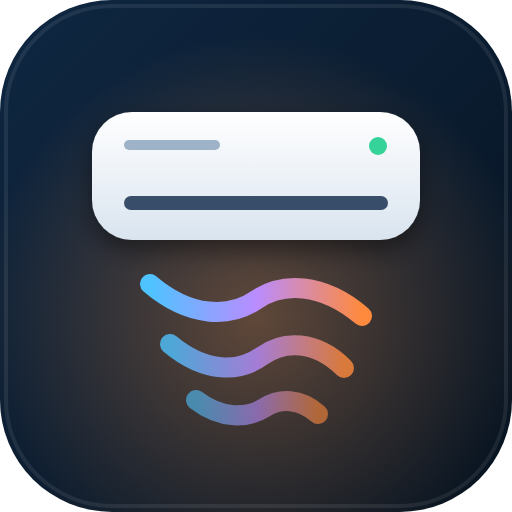
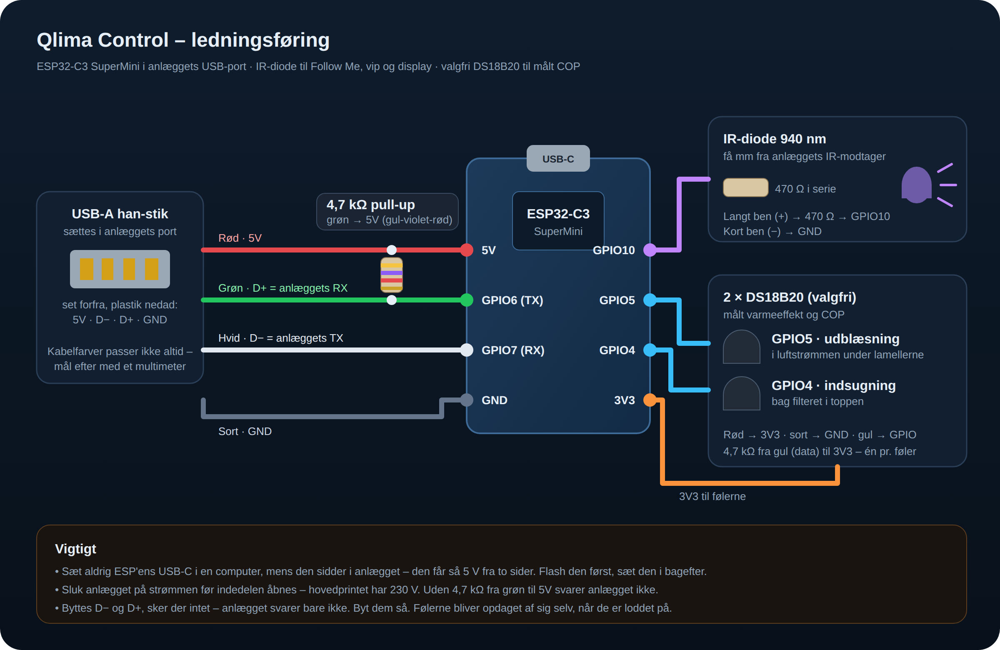

Qlima Control
Lokal styring af Qlima/Midea-varmepumper med en ESP32-C3 i anlæggets USB-port.
- Sæt ESP32-C3'en i computeren med USB-C og tryk Installér.
- Vælg dit WiFi direkte i installeren – eller forbind senere til netværket
Qlima Control(kodeqlimacontrol). - Byg den ind i anlægget som beskrevet i vejledningen.
- Home Assistant finder den selv. Tilføj derefter integrationen Qlima Control.

Web-UI på ESP'en: http://<ip-adresse> · bruger admin · kode qlima